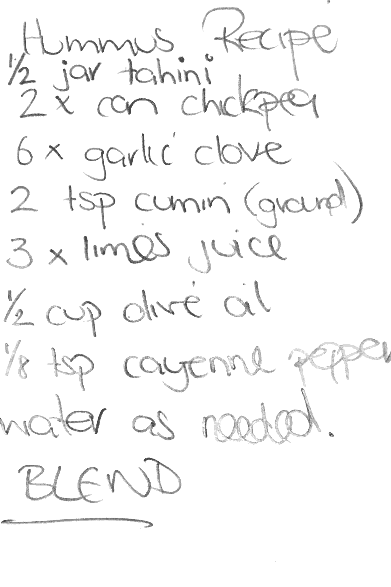

Hummus from Mr Jim
Instructions
Yesterday we had a little get together at our Villa (actually we wre 21 people if my counting is right...). It's always fun to spend time with friends, and food & drink is an integral part of this fun. One highlight yesterday was Mr Jim's Hummus. And he was friendly enough to share his recipe ;)
It's rather simple:
- 1/2 jar of tahini. The jar he has in mind is about the size of a can of Coca-Cola
- 2 cans of chickpeas. Using canned chickpeas avois the process of soaking and cooking them ;)
- 6 x garlic clove
- 2 Tea spoons of cumin (ground)
- 1/2 cup olive oil
- 1/8 tea spoon of cayenne pepper
- Water as needed
BLEND! And yes, you can eat it right away, no need to wait...
The original writing from the chef: 